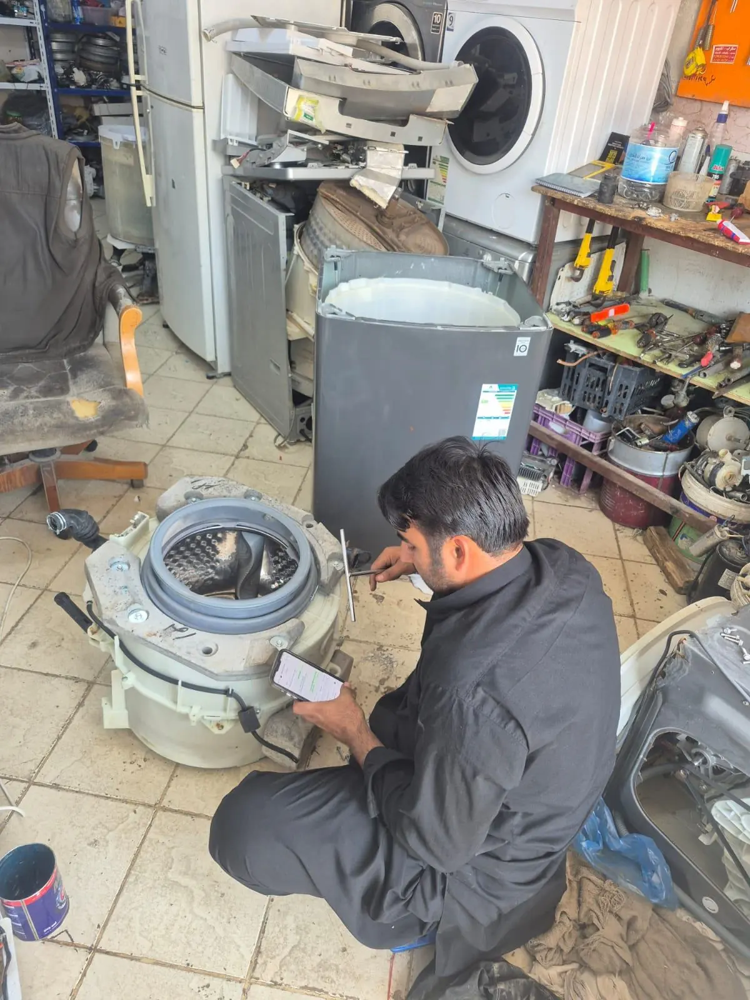

Washing Machine Repair in Al Malaz, Riyadh
If your automatic washing machine is faulty in Al Malaz, a technician can visit your home, explain the fault and the cost, and repair it once you agree. A few clear details from you make the visit smoother.
Published by Automatic Washing Machine Repair · Last updated: November 2026
This page is part of our guide to Automatic Washing Machine Repair in Riyadh.

How do I describe my address and floor?
A technician cannot guess which door is yours. A good description saves time for both of us, and it is the main thing that makes a home visit run smoothly. People in Al Malaz and everywhere else in Riyadh give us the best directions when they follow the same order.
- Start with the district name and the street name, as written on your national address or a delivery app.
- Say whether it is a villa, a flat in a building or a floor in a family house.
- Give the floor number and the flat or door number.
- Mention the name on the bell, and whether there is a lift.
- Send a WhatsApp location pin as well, so the map and your words agree.
What should I photograph before the technician comes?
Three photos take two minutes and answer most of our first questions. Take them with the machine unplugged and the tap closed if you need to move anything.
| Photo | Why it matters |
|---|---|
| The label with brand and model, often inside the door frame or on the back | The model tells us what kind of machine it is and which parts it may need |
| The screen or lights when the problem shows | Error codes differ between models, so we read yours against your own manual |
| The spot where water appears | It shows whether the leak is at the door, the hoses or underneath |
Where do people usually keep the machine at home?
Some machines stand in a kitchen, others in a bathroom or a small laundry space. Tell us where yours is. If there is a tight corner or a narrow door, we know to prepare for it, and you can clear the area in front of the machine before we arrive.
Customers in Al Malaz rate us 4.8 on Google from 264 reviews across Riyadh, so you can read what other people say before you write to us.
Is a short video useful?
Yes, especially for noises and for faults that happen at one stage of the cycle. Record ten to twenty seconds on your phone and send it on WhatsApp. Keep your hands and the phone well away from the moving drum, and stop the machine if anything looks unsafe. Hearing the sound often tells us more than a long description.
Which details about the fault help us most?
Think about the story of the problem, not just the symptom.
- At which stage does it happen: filling, washing, draining or spinning?
- Is it the first time, or has it happened before?
- Did anything change recently, such as a new detergent, a power cut or moving the machine?
- How big was the load, and was it heavy items like blankets?
- Is there a smell, smoke or a warm patch on the body?
What if I smell burning or see water near the socket?
Do not touch the machine. If you can reach the main switch of the flat or house safely and your hands and floor are dry, switch the power off there. Close the water tap if it is safe to do so. Then message us. Do not use the machine again until a technician has looked at it.
What happens after I send the details?
We read your message and photos, then arrange a visit. Most repairs are done the same day you contact us, depending on the fault. On site the technician finds the problem, tells you the cost, and waits for your agreement. Parts and labor have a 30-day warranty.
If your problem is a leak, our washing machine leaking guide explains what to look at first. For a general look at what we repair, see the automatic washing machine repair page.
Frequently Asked Questions
It helps, but a clear photo of the label is enough. If you cannot find it, tell us the brand and send a picture of the front.
Just tell us the floor and whether there is a lift. The technician comes to the machine, so the machine does not need to be carried down.
Yes. Give us the name and number of the person who will be at home, and make sure they know the repair only starts after the cost is agreed.
Yes. Our home visits cover the whole city, and the area guide shows how the districts are grouped.
Book a visit in Al Malaz
Send your address, the three photos and a short description of the problem. You can also call or WhatsApp us on +966 59 116 1916.